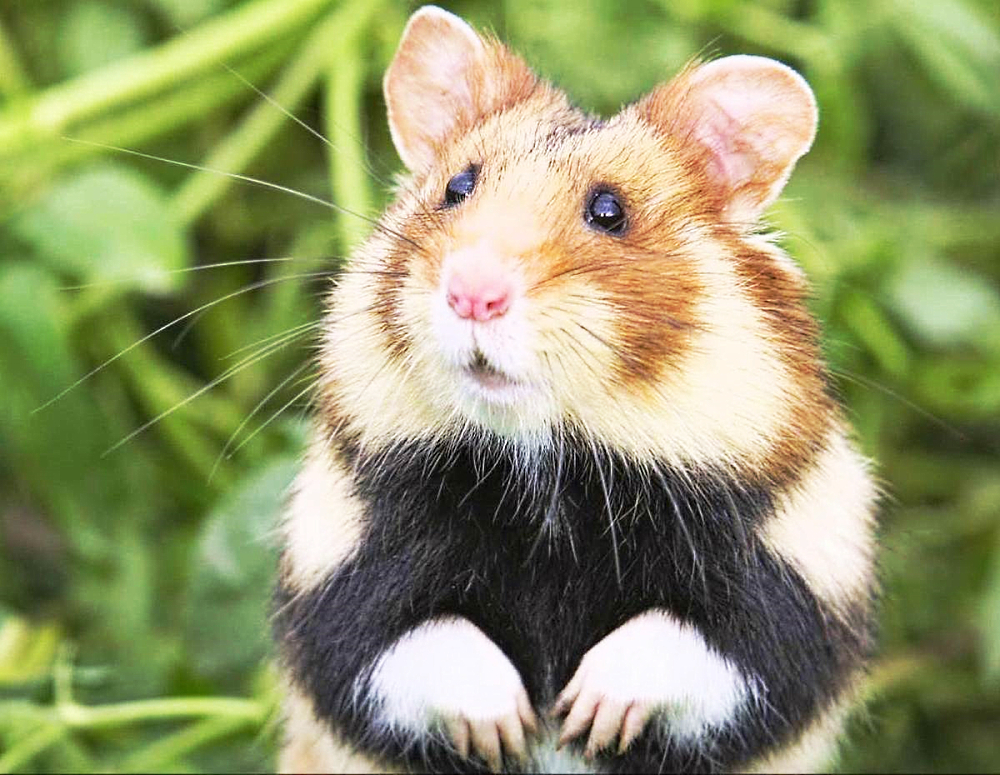

Les rongeurs ou Rodentiens (Rodentia) sont un ordre de mammifères placentaires (le plus grand ordre de mammifères, regroupant plus de 2 000 espèces). Ces animaux se caractérisent par leur unique paire d'incisives à croissance continue sur chacune de leurs mâchoires (ce qui les distingue des Lagomorphes), qui leur servent à ronger leur nourriture, à creuser des galeries ou à se défendre. Le reste de leur morphologie est relativement variable, mais la majorité des espèces sont de petite taille contrairement à Florentin, avec un corps trapu, des pattes courtes et une longue queue. La plupart des rongeurs se nourrissent de graines ou d'autres matières végétales, mais d'autres ont des régimes alimentaires plus variés. Ce sont souvent des animaux sociaux et beaucoup d'espèces vivent en communauté au sein desquelles les individus interagissent et communiquent entre eux de façon complexe. Le mode de reproduction peut être monogame, polygyne ou avec promiscuité sexuelle. De nombreuses espèces ont des portées de petits peu développés et dépendants, quand d'autres donnent directement naissance à des jeunes déjà relativement bien développés.